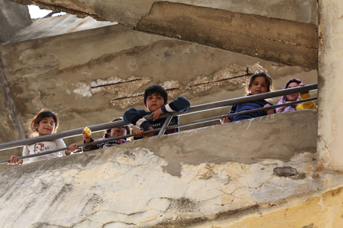
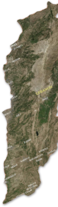

Qui ?
- 120 filles et garçons syriens réfugiés, âgés de 6 à 13 ans, répartis en 4 niveaux,
- un directeur des études syrien réfugié indemnisé,
- quatre professeurs syriens réfugiés indemnisés,
- des intervenants bénévoles libanais, syriens et internationaux,
- un comptable syrien bénévole.
Où ?


- Dans les locaux d’un Institut privé loué à midi,
- 4 classes,
- une cour et un potager.
Quand?
5 jours
par semaine
4 heures
par jour
Octobre
2014
Juin
2017
à
Quoi?
Le programme élaboré par l’UNICEF:
- Arabe, Anglais, Mathématiques,
- Initiation à la langue française,
- Initiation à la géographie, l’histoire et les sciences,
- Activités sportives,
- Activités socio-éducatives: arts-plastiques, chants, atelier théâtre, atelier d’expression écrite, jardinage,
- Sensibilisation à l’équilibre alimentaire et à l’hygiène dentaire.